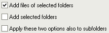

There are several ways to add files to the list:
When you click the "Add files" button a standard Windows file selection appears. This window is controlled by Windows, so it works like in other programs. One thing to know is that the order of the files that will be returned by this window is not especially the order that you see. First, Windows sends the file that is focused (i.e. it has a small dotted border, it is usually the last file that you selected). Then it sends all the files that follow it. When it reaches the end, it jumps to the top to send remaining files.
There may also be some speed problems when trying to add thousands of files. The window may take an eternity to send the filenames to the program. If this is the case, use the "Add folders" function instead.
When you click the "Add folders" button a window appears, allowing you to select one or several folders. This window was not only designed to add folders to the list, but also their contents.
A few options at the bottom of the window allow to specify what should be added to the list:

The first one specifies if the files contained in selected folder(s) should be added or not. The second one specifies if the selected folder(s) should be added or not. The third one specifies if the sub-folders of selected folder(s) have to be included too (this applies to all sub-levels, not only the first one).
Currently, this window does not display network items or special devices that do not have their own drive letter (network drives that are mapped to a drive letter will be displayed in the list). In the future this may be improved (at least for network items). Until then, a "Network" button allows to choose a folder from a network drive. To add these, the drag & drop may be easier than this window.
You can drag & drop files from Windows Explorer (and other program that are compatible with it, like Total Commander or Servant Salamander) directly to the main window of Ant Renamer. This is usually a much easier way to add files than selecting them in the "Add files" window.
By default, when you drop the files a window appears. It allows you to choose how you want to add the files. These options are the same than those available in the "Add folders" window. An option labelled "Do not ask again" allows to keep the select options for future drag & drop, so the window is not displayed again. If you check this option and want to discard it (or change the options), you can do that in the "Files & Folders" page of the Options window. To bring back this window one time without changing its default behaviour, you can hold down the Ctrl or Shift key while dropping the files. This allows, for example, to add a folder to the list when the default behaviour that you select is to only add files.
The same limitations than for the "Add files" window apply (files order and speed problems with lots of files).